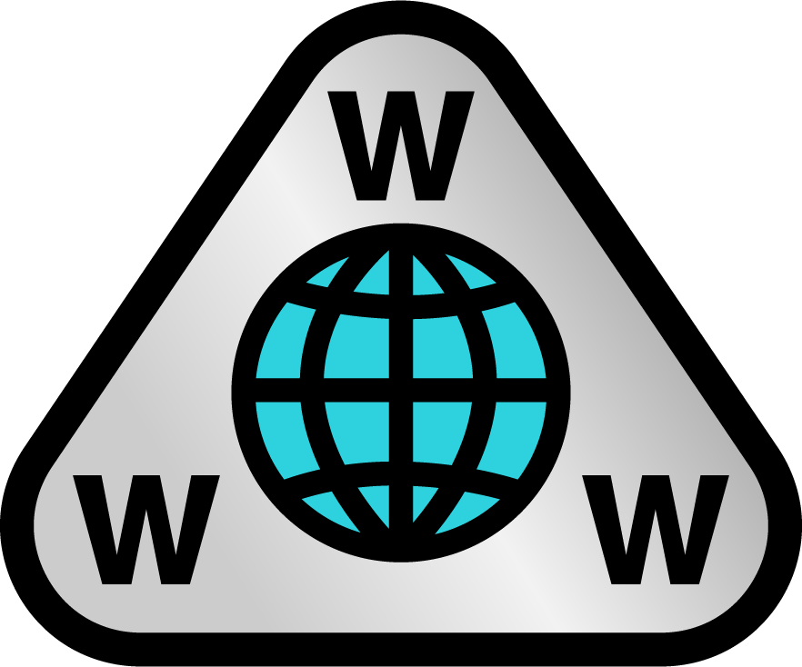

Under 60-talet planerades ARPANET av USA:s försvarsdepartement för att utveckla datapaketteknik, vilket tillgängliggör att skicka data över digitala nätverk. Det fick namnet från dess finansiär Darpa, Defense Advanced Research Projects Agency. Mars 1970 var det en dator från BBN Technologies i Cambridge som lyckades koppla upp sig på nätet. Nätet växte i en omfattande fart i USA och 1973 var det 40 datorer totalt som var uppkopplade. Det andra landet som lyckades koppla upp en dator till nätet var Norge via en satellitlänk.
Vattenfall under 60-talet gav ASEA, Allmänna Svenska Elektriska Aktiebolaget, uppgiften att skapa ett databaserat övervakningssystem för att slippa kommunikation via telefon. Det fick senare namnet TIDAS, Totalintegrerat datasystem.
Till sist så byggde NSFNET, National science foundation network, ett stamnät som senare 1990 fick Arpanet att ner.
Tim Berners Lee är skaparen av ”The World Wide Web”, vilket gjorde det tillgängligt att söka på internet. Han har en kandidatexamen från Queen’s college vid Oxfords universitet och har arbetat med programmering innan han blev konsult.
1989 gav Tim ett förslag om ett globalt hypertextprojekt baserat på Enquire, ett tidigt mjukvaruprojekt från 80-talet, och 1990 skapades den första hemsidan som handlade om CERN, världens första partikelfysik. 1991 blev hemsidan tillgänglig till offentligheten och Tim skrev om den i offentliga nyhetsgrupper. 1993 släpptes rättigheterna till World wide web, vilket ledde till att webben började sprida sig som en löpeld.
Han skapade även den första webbläsaren och webbservern som gjorde det möjligt att surfa omkring ett lågt utbud av hemsidor.
Den första stora webbläsaren var Mosaic. Dess utveckling började i December 1992 på University if Illinois. Den första versionen, 1.0, släpptes den 22 April 1993 och andra utvecklingsversioner hade mött trafik. Den 11 November 1993 släpptes den första versionen av Windows, vilket var den första grafiska webbläsaren för allmänheten.
Den stora skillnaden som Mosaic gjorde från de andra tidigare webbläsare var att Mosaic kunde visa både text, bild, video och ljud samtidigt, istället för i olika fönster. Marc Andreessen var med i gruppen av programmerare som hade utvecklat Mosaic och såg de möjligheter som fanns inom World wide webb och startade Netscape, som senare skulle släppas som Netscape navigator.
Domännamnsystemet, DNS, är ett sätt att förenkla adressering av datorer på IP-nätverk. Domännamnen kopplas ihop med en IP-adress som senare kan användas för kommunikation. DNS kan också användas som en databas.
En IP-adress är ett nummer som används som en adress på internetet. Oftast så identifierar IP-adressen en viss dator, eller en annan enhet, medan adressen visar vart den är kopplad. Domännamn, vilket är en form av administrativ helhet, omvandlas till IP-adresser som används i kommunikationen.
Den största svenska hemsidan är Aftonbladet, publicerad den 25 augusti 1994. Aftonbladet var den första tidningen som publicerades online i Sverige. JMK, Institutionen för journalistik, medier och kommunikation vid Stockholms universitet, hade en tid velat pröva nätjournalistik i samarbete med en riktig tidning. De möttes dock av kalla handen överallt, ända tills Bo Hedin – dåvarande nyhetschef på Aftonbladet lyc kades övertyga tidningens styrelse våren 1994. Aftonbladet finns kvar idag och är en av Sveriges mest besökta hemsidor.
